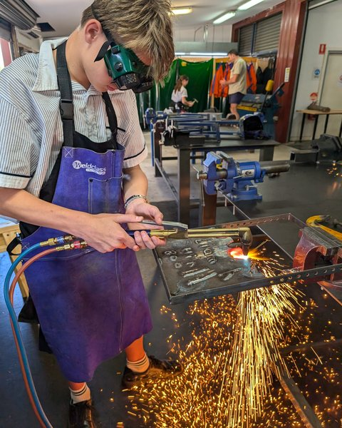

Bentley Harris
Engineering student — fabrication, electronics and embedded systems.

I am a first-year electrical engineering student at the University of Queensland, studying a combined Bachelor of Engineering and Master of Engineering. Before university I completed a two-year Certificate II in Engineering during high school. That course is where I learned to weld, run a lathe, work sheet metal and heat treat steel, and it produced most of the fabrication work on this site.
Outside coursework I design and build electronics. I started with the basics — driving fans and motors, controlling LEDs, reading sensors — and moved on to complete builds: Arduino control systems, PID stabilisation, hand-soldered perfboard circuits laid out in KiCad, and enclosures I model in CAD and print myself. My largest project so far is a self-stabilising floating house, which took over fifty hours of design work and taught me most of what I know about tuning a control loop.
I document everything I build. That is what this site is for.
Selected projects
Skills
Manufacturing & fabrication
MIG, stick and spot welding. Oxy-acetylene torch operation. Metal and wood lathe, drill press, band saw, angle grinder, belt sander. Heat treating. Sheet metal work in mild steel and aluminium.
Electronics & embedded
Arduino in C/C++, PID control, IMU sensors, motor controllers, MOSFET switching, buck converters, RTC modules, OLED displays, RF modules, battery and supercapacitor systems, soldering, perfboard construction, circuit fault diagnosis.
Design & software
CAD modelling for 3D printing, 3D printer operation, KiCad schematic and PCB design, data logging and telemetry, spreadsheet data analysis.
Measurement & drawing
Precision measurement with calipers and scribes, engineering drawings and technical drafting, hand-drawn schematic documentation.